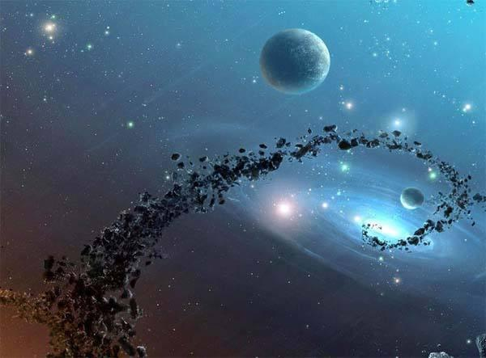

星火 |
天文网 |
web 天文博物馆 |
|
创建于1996年 |
 天文学的基础知识 宇宙是如何形成的? 3.宇宙大爆炸后0.01秒，宇宙的温度大约为1000亿度。物质存在的主要形式是电子、光子、中微子。以后，物质迅速扩散，温度迅速降低。大爆炸后1秒钟，下降到100亿度。大爆炸后14秒，温度约30亿度。35秒后，为3亿度，化学元素开始形成。温度不断下降，原子不断形成。宇宙间弥漫着气体云。他们在引力的作用下，形成恒星系统，恒星系统又经过漫长的演化，成为今天的宇宙。 宇宙是万物的总称，是时间和空间的统一。从最新的观测资料看，人们已观测到的离我们最远的星系是130亿光年。也就是说，如果有一束光以每秒30万千米的速度从该星系发出，那么要经过130亿年才能到达地球。根据大爆炸宇宙模型推算，宇宙年龄大约200亿年。 宇宙有多少个星系?每个星系有多少颗恒星? 在这个以130亿光年为半径的球形空间里，目前已被人们发现和观测到的星系大约有1250亿个，而每个星系又拥有像太阳这样的恒星几百亿到几万亿颗。因此只要做一道简单的数学题，你就不难了解到，在我们已经观测到的宇宙中拥有多少星星。地球在如此浩瀚的宇宙中，真如沧海一粟，渺小得微不足道。 |